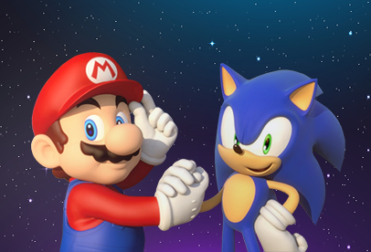

30 de outubro de 2022
Opa Companheira(o)....
Aí, me chamo Sonic Cabloco, digamos que o Mindset Code usa a minha imagem em tudo feito com códigos. A minha história começa da seguinte forma, meus brothers, desde 2020 eu venho com a ideia de programação. Porém, em 2020 eu não tinha PC ou, o que eu tinha, não era meu e não me deixava codar por nada nesse mundo. Aí, um belo dia, eu ganhei um lindo notebook de uma coroa muito generosa (minha mãe). Porém, eu ainda não sabia muito sobre a área, então em 2021, época em que eu já possuía um notebookzinho, ainda continuei na vagabundagem por não saber por onde começar. Passou-se algum tempo e, em 2022, conheci um brother que me mandou uma parada da Kenzye. Foi aí que eu comecei a fazer o desafio. Digamos que consegui construir uma página com marcações HTML. A página era sobre cantores favoritos e, por volta de junho de 2022, dei uma grande pausa, pois tinha outras obrigações. No finalzinho de 2022, comecei a aprimorar meus conhecimentos. Comecei com o curso do Guanabara, revisei meu HTML, cheguei no CSS e agora eu estudo CSS. E esse é meu recomeço :
Ass.: Sonic Cabloco and Mindset Code
01 de Maio de 2023
O dia em que conheci o Mano Bross

Era um dia ensolarado muito louco após uma codada gigantesca para a rocketseat, de repente, eu muito louco me vi transportado para dentro do mundo dos videogames. Em meio a pixels e cores vibrantes, lá estava eu, cara a cara com o lendário "Mano Bross"!
A princípio, fiquei completamente maluco, tentando entender como eu havia sido sugado para dentro daquele universo maluco. Mas, ao me dar conta de que estava ao lado do icônico encanador de bigode, meu coração disparou de emoção Mario, com seu macacão azul e chapéu vermelho, me cumprimentou com um largo sorriso e um e ai meu brother eu sou o Mario Bross, Partiu Codar?
20 de Maio de 2023
Após codificação...
Confesso que não foi nada fácil codar esse site. Porém, graças ao meu bom Deus, tive ajuda da Rocketseat. Agora estou entendendo diversas coisas em CSS e HTML que vou poder usar em outros sites. De fato, o design desse site ficou foda. Obviamente, o design não é apenas meu, né jow, mas ficou fodástico com um toque meu junto com a Rocketseat. Agora, partiu o próximo nível. Cruzes, me sinto cansadérrimo. Simbora, próximo nível! +++Aprendizadooo!!!!!